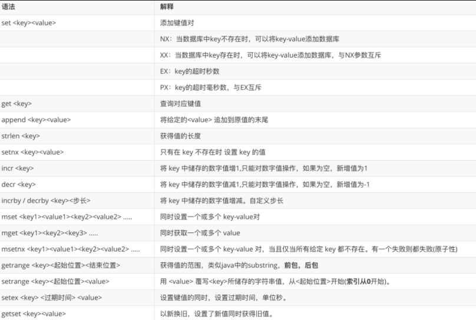
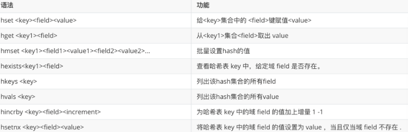

redis
No Sql 以及 Redis 的一些特性
NoSQL（Not Only SQL） 是一类非关系型数据库的统称，旨在解决传统关系型数据库在高并发、大数据量、灵活数据模型等场景下的瓶颈。
Redis 是一个开源的内存型键值数据库，属于 NoSQL 中的键值存储类型。
安装 redis
-
去 redis 官网下载 redis，默认就是 .tar.gz，然后解压
-
redis 需要 c 环境
yum -y install gcc gcc --version -
进入 redis 目录，然后编译 redis
make 编译 make install 安装 # 安装失败 make disclean -
默认安装到了 usr 里面，不需要自己配环境变量了（命令所在位置：/usr/local/bin）
Redis 配置、启动
1、将前台启动改为后台启动
309 行附近：daemonize no
2、将 bind ip 注解掉，这样其他 host 才能连接
87 行附近：bind 127.0.0.1 -::1
3、取消密码保护
111 行附近：protected-mode yes --> no
Redis 常见数据类型和操作命令
1. 常见数据类型
redis的存储时 key-value形式的,这里的五大类型指的是 value的五种数据类型!
1) String 2. List 3. Set 4. Hash 5. Zset
2. key 相关指令

3. String 相关指令
String是Redis最基本的类型，你可以理解成与Memcached一模一样的类型，一个key对应一个value。
String类型是二进制安全的。意味着Redis的string可以包含任何数据。比如jpg图片或者序列化的对象。
String类型是Redis最基本的数据类型，一个Redis中字符串value最多可以是512M

4. List 相关指令
redis 现在的 list 底层结构就是 Quicklist, Quicklist 就是 Redis 用来实现 List 的底层数据结构 —— 说白了，它是一个「用双向链表串起来的多个小压缩列表」。
额, 整理笔记看到自己以前初学 redis 还有点感慨, hhh, redis 底层数据结构在八股笔记里, 之后也会搬到我的博客上!

5. Set 相关指令
Redis 的 Set 类型是一个不允许重复元素的集合，元素存储的顺序不按照插入的顺序，因此属于无序集合。一个 Set 最多可以存储 2^32 - 1 个元素，这与数学中的集合概念类似。Set 类型不仅支持增、删、改、查等操作，还支持多个Set之间的交集、并集和差集运算
typedef struct dictht {
dictEntry **table;//哈希表数组
unsigned long size;//哈希表大小
unsigned long sizemask;//掩码大小，用于计算索引值，总是等于size-1
unsigned long used;//哈希表中的已有节点数
} dictht;

6. Zset 相关指令
ZSet 底层是 跳表（skiplist） + 哈希表（hash table）：

7. Hash 相关指令

其他常用命令 :
hgetall key
hlen key
hkeys key
kvals key
hincrby key field increment
hsetnx key field vaul
Jedis
导入依赖
<dependency>
<groupId>redis.clients</groupId>
<artifactId>jedis</artifactId>
<version>2.9.0</version>
</dependency>
<!-- https://mvnrepository.com/artifact/org.junit.jupiter/junit-jupiter-api -->
<dependency>
<groupId>org.junit.jupiter</groupId>
<artifactId>junit-jupiter-api</artifactId>
<version>5.8.1</version>
<scope>test</scope>
</dependency>
然后就可以获取连接，执行方法了
Jedis jedis = new Jedis("192.168.6.101",6379);
jedis.xxx (这里的方法名就是 redis 的命令名)
Spring data redis
1）导入相关场景启动器以及依赖（spring-boot-starter-data-redis， spring-boot-starter-web：要的是json以及连接池依赖 commons-pool2）
<parent>
<groupId>org.springframework.boot</groupId>
<artifactId>spring-boot-starter-parent</artifactId>
<version>3.0.5</version>
</parent>
<dependencies>
<dependency>
<groupId>org.springframework.boot</groupId>
<artifactId>spring-boot-starter-web</artifactId>
</dependency>
<dependency>
<groupId>org.springframework.boot</groupId>
<artifactId>spring-boot-starter-test</artifactId>
</dependency>
<dependency>
<groupId>org.springframework.boot</groupId>
<artifactId>spring-boot-starter-data-redis</artifactId>
</dependency>
<dependency>
<groupId>org.projectlombok</groupId>
<artifactId>lombok</artifactId>
</dependency>
</dependencies>
spring:
data:
redis:
host: 47.94.86.115
port: 6379
# jedis:
# pool:
# enabled: true
# max-active: 8
# max-idle: 5
# max-wait: 100
# client-type: jedis
# # redis连接池配置
## 含义：这个属性指定是否启用 Lettuce 连接池。
# spring.data.redis.lettuce.pool.enabled=true
# # 含义：这个属性定义了连接池中允许的最大活动连接数。
# spring.data.redis.lettuce.pool.max-active=8
# # 含义：这个属性定义了连接池中允许的最大空闲连接数。
# spring.data.redis.lettuce.pool.max-idle=5
# # 含义：这个属性定义了在获取连接时最长的等待时间（以毫秒为单位）。
# spring.data.redis.lettuce.pool.max-wait=100
@Configuration
public class RedisTemplateConfig {
@Bean
public RedisTemplate<String, Object> redisTemplate(RedisConnectionFactory connectionFactory){
// 创建RedisTemplate对象
RedisTemplate<String, Object> template = new RedisTemplate<>();
// 设置连接工厂
template.setConnectionFactory(connectionFactory);
// 创建JSON序列化工具
GenericJackson2JsonRedisSerializer jsonRedisSerializer =
new GenericJackson2JsonRedisSerializer();
// 设置Key的序列化
template.setKeySerializer(RedisSerializer.string());
template.setHashKeySerializer(RedisSerializer.string());
// 设置Value的序列化
template.setValueSerializer(jsonRedisSerializer);
template.setHashValueSerializer(jsonRedisSerializer);
// 返回修改的模板对象
return template;
}
}
事务和锁
1. 概念
在redis中，事务就是一系列命令组个队（QUEUE），但是不像 mysql，redis 的事务是没有 ACID 的。
而锁是因为在事务还没执行之前，也就是组队期间，当前事务要访问的数据可能被其他命令所修改，从而导致脏读。
2. 代码实现
// 事务
multi 开启事务
exec 执行事务
discard 取消事务
// 锁
watch key1 key2 ...
3. 悲观锁和乐观锁
悲观锁的意思就是悲观的认为事务要访问的数据会被其他命令或者事务所修改，所以我直接给数据上锁，让别人在我所执行过程中不能使用这个数据，因此，悲观锁性能会差点。 而乐观锁就是认为本次要访问的数据不会被其他命令或者事务所修改，就算其他事务或命令要修改，也让他们去修改，我在重新开一次事务就行了。 java用的是悲观锁机制，而redis是乐观锁机制。
Lua 脚本
Lua 是一门轻量级、可嵌入的脚本语言，设计目标是高效、简洁、可扩展，常用于游戏开发、嵌入式系统和高性能服务中（如 Redis）。 在 redis 中，lua可以一次执行多条redis命令，从而减少与redis的连接次数，提升性能。同时，这些 redis 命令是原子的，复合的。也就是要么全部执行，要么全部不执行。
使用方法：
- 编写 lua 脚本，将 lua 脚本存到 resources 下
- 我们需要将 lua 脚本转为 resource 对象，然后再转为 RedisScript 对象并注册到 ioc 容器中。
- 然后，通过 script.execute() 方法就可以调用这个 lua 脚本。
@Bean
public RedisScript<Boolean> booleanRedisScript(){
//加载脚本文件
Resource resource = new ClassPathResource("lua/change.lua");
//参数1： 加载脚本的资源对象 参数2： 返回值类型
RedisScript<Boolean> booleanRedisScript = RedisScript.of(resource, Boolean.class);
return booleanRedisScript;
}
Redis 的持久化策略
1. RDB
在指定时间间隔内，将内存中的数据集快照写入磁盘，生成一个 dump.rdb 文件
// 持久化文件名字配置
dbfilename dump.rdb （481行）
// dump.rdb 存放的位置
dir ./ （默认配置）
触发持久化的方法：
save # 在主进程去进行持久化
bgsave # 异步
shutdown
flushall
// 官方提供的配置
save 900 1 # 在900秒（15分钟）内，如果至少有1个键发生改变，则执行RDB持久化
save 300 10 # 在300秒（5分钟）内，如果至少有10个键发生改变，则执行RDB持久化
save 60 10000 # 在60秒内，如果至少有10,000个键发生改变，则执行RDB持久化
注意: 周期一定执行完毕才会触发持久化!不会中途触发! 所以rdb自动备份可能会丢失数据
2. AOF
记录服务器接收到的每一个写命令，以协议格式追加到 appendonly.aof 文件末尾。重启时通过执行命令恢复数据
// 持久化的文件名配置
appendfilename "appendonly.aof"
// "appendonly.aof 存放的位置
dir ./
// 写的频率
appendfsync always
appendfsync everysec 默认用这个
appendfsync no
// 是否开启
appendonly no --> yes
重写压缩机制： 1. aof 才有重写机制 2. aof 存储写命令的文本文件 3. 重写会减少 aof 文件的大小， aof 重写保证存的是能够恢复数据的最小指令集 4. aof 可以自动触发重写，也可以手动触发：bgrewriteaof
auto-aof-rewrite-percentage : 150% #增量百分比
auto-aof-rewrite-min-size : 100MB #设置第一次压缩的基准值
第一次: 100+(100*150%) = 250MB -> 80MB
第二次: 80+80*150% = 200MB -> .....
选择建议： a. 官网推荐两个都开启，开启的AOF优先生效 b. 非敏感数据，建议RDB c. 单纯的缓存，建议都不开启 d. 敏感数据，建议都开启
Redis 主从
主从是来实现读写分离的，主负责写入数据并负责将数据写入从，从负责读取数据，并且接受主发来的同步数据。
1. 主从实现方法
准备多份配置文件
include /root/myredis/redis.conf
pidfile /var/run/redis_6379.pid
port 6379
dbfilename dump6379.rdb
redis-server xxx.conf
构建主从模式
slave of ip port --> replicaof ip port
info replication（查看角色）
2. 主从实现原理
a. 全量复制: 小弟连接到主机，主机第一次会将所有数据都传递给小弟！（全量） b. 增量复制：后续的主机数据更新，都属于增量复制，得到的新数据会立即同步给小弟（增强） c. 主从模式通过全量+增量提高了性能的同时，也能保证任意时刻加入的小弟都有主机的全部数据 d. 我们必须知道，主从模式数据是有延迟性的！（主机-》写入数据-》从机没有读到）
3. 哨兵机制
哨兵的存在就是当主机出现故障时，自动的选择一个从机当作主机，然后让其他从机都执行 replicaof ip host，从而实现换主，当曾经的主机回来后，也会变成当前主机的从机。
编写哨兵配置
sentinel monitor mymaster 127.0.0.1 6379 1
启动哨兵模式
redis-sentinel sentinel.conf
redis 集群
Redis 集群（Redis Cluster）是 Redis 官方提供的分布式解决方案，用于实现数据分片（sharding）、高可用和水平扩展。
核心特性：
- 自动分片：将数据分散到多个节点（最多 16384 个哈希槽）
- 高可用：每个主节点可配置从节点，主节点故障时自动故障转移
- 去中心化：无中心代理，客户端直连任意节点，集群内部自动重定向
- 写能力扩展：多主架构，突破单机写性能瓶颈
核心原理：
- Redis 集群将整个键空间划分为 16384 个哈希槽（hash slots）
- 每个 key 通过 CRC16(key) % 16384 计算出所属槽位
- 每个主节点负责一部分槽位（例如 3 主节点：0-5460, 5461-10922, 10923-16383）
每个节点的配置文件
include /root/myredis/redis.conf
port 6379
pidfile "/var/run/redis_6379.pid"
dbfilename "dump6379.rdb"
cluster-enabled yes
cluster-config-file nodes-6379.conf
cluster-node-timeout 15000
将多个 redis 组成集群
# 每个服务都要清空
redis-cli --cluster create --cluster-replicas 1 172.17.14.36:6379 172.17.14.36:6380 172.17.14.36:6381 172.17.14.36:6382 172.17.14.36:6383 172.17.14.36:6384
连接集群
# 登录必须是-c链接的集群不是每个节点
redis-cli -c -p 6383
# 查看集群中节点
cluster nodes 查看节点关系
# redis集群的数据存储（集群，真正的能解决数据的并发写问题！）
存储过程： key => CRC16(key) =》 整数 =》 %16384 => index => 存储到对应的slot
节点 A 负责处理 0 号至 5460 号插槽。
节点 B 负责处理 5461 号至 10922 号插槽。
节点 C 负责处理 10923 号至 16383 号插槽。
set name xx -> slot -> redirect -> master节点 -》 存储数据
#一次设置多对键值对
mset key{1} key{1} ....{1}slot值进行存储
计算 key 的slot
- cluster keyslot key 计算key应该保存在那个插槽
- cluster countkeysinslot slot的值 计算某个插槽中保存的key的数量
- CLUSTER GETKEYSINSLOT \<slot>\<count> 返回 count 个 slot 槽中的键。
集群故障恢复
1. 单个分区的master挂了
集群内部自带哨兵
主节点挂了以后，自动选举丛节点当选主节点
2. 单个分区都挂了
- redis.conf中cluster-require-full-coverage 为yes 那么，整个集群都挂掉
- redis.conf中cluster-require-full-coverage 为no 那么，只有该插槽数据全都不能使用。